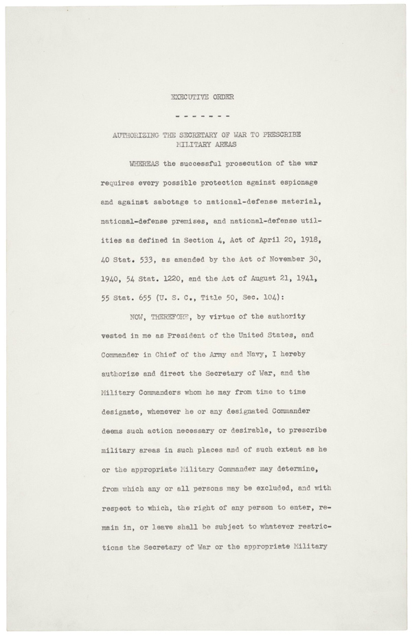

Executiveㅤ Order 9066
On February 19, 1942, an order was issued by Franklin D. Roosevelt, which authorized the forcible removal of all people considered a threat to national security, moving them to "relocation centers".

From 1861-1940, ~275,000 Japanese people immigrated to Hawaii and the mainland US. Many worked in Hawaii sugarcane fields as contract laborers. After their contracts expired, Japanese people started opening shops, and other immigrants settled on the West Coast of the US and cultivated farmlands, fruit orchards, fishing, and other small businesses. Japanese Americans owned less than 4 percent of California's farmland in 1940, but produced more than 10% of the total state's farm resources.
Japanese-Americans were referred to by their generation within the United States; first generation Japanese immigrants were known as Issei, and second generation (which were citizens by birthright) by Nisei.
In 1882, the passing of the Chinese Exclusion Act essentially ended the immigration of Chinese laborers to the US, and was the basis for a lot of laws that ended in making non-citizen Asian residents ineligible for naturalization. It became harder and harder for Chinese people to get jobs in America, which led to the opening for Japanese people to take some jobs.
Many other acts were created to try and limit immigration, such as the 1885 Alien Contract Labor Law (also known as the Foran Act). The Foran Act was to prohibit any company or individual to bring unskilled immigrants into the United States to work under contract. People still found a way around the Foran Act, by employers and agents making generous offers without a contract, and immigrants not mentioning anything about a contract to immigration officials.
A lot of Japanese Americans started to immigrate to Hawaii to look for better financial opportunities, and it became known as the "Free Immigration Period", as immigrants could freely pay the passage expenses themselves and choose their own job destinations. In 1924, however, the US passed the Immigration Act of 1924, or the Japanese Exclusion Act. It prohibited the entry of all aliens who where "ineligible" for citizenship, which ended Japanese immigration to the U.S.
Ethnic concentration of Japanese and other peoples were increased more by real estate agents who would only sell properties to Japanese Americans inside of existing Japanese American enclaves.
On May 3, 1913, California established the Alien Land Law, which prevented Asian immigrants from owning or leasing land. Ozawa v. United States, a case in 1922 which went to the U.S. Supreme Court, upheld the government's right to deny any Japanese immigrants of U.S. citizenship.
Around 10 weeks after the U.S. entered World War II, Franklin D. Roosevelt signed the Executive Order 9066 in February 19, 1942.
Coolidge signing the Japanese Exclusion Act
When the relocations first started to happen, they were voluntary. Due to them being voluntary, the relocations were minimal. The executive order allowed for forced relocations of Japanese-Americans living on the West Coast of the U.S.
When Japan attacked the Pearl Harbor Naval Base in Hawaii on December 7, 1941, it launched irrational fears about national security, especially where Japanese-Americans lived: the West Coast. When combined with economic competition and the long-standing anti-Asian racism, it pressured the Congress and President to remove Japanese people from the west coast, both Issei and Nisei (1st & 2nd generations).
The Department of Justice started to raise constitutional and ethical objections to the removals, so the task was given to the U.S. Army instead. President FDR signed the Executive Order 9066 on February 19, 1942, to give that authority to the U.S. Army.
The order never specified any sort of ethnic group. However, Lieutenant General John L. DeWitt of the Western Defense Command announced curfews that included on Japanese Americans
On March 21st, Congress passed Public Law 503, which made violations of Executive Order 9066 a misdemeanor punishable by up to 1 year in prison and a $5,000 fine (~$96,000 today adjusted for inflation). Proceeding it under the authority of the executive order, on March 29, 1942, DeWitt issued the Public Proclamation No. 4, starting the forced evacuation and concentration of West Coast Japanese-American on 48-hour notices. In the next 6 months, approximately 122,000 men, women, and children were forced to go to "assembly centers." They were proceeded to be evacuated and confined in isolated, fenced, guarded relocation centers, also known as internment camps.
The internment camps were set up and occupied in about 14 weeks. Most of the people who were relocated lived on the West Coast, two-thirds of them were American citizens
Legally, the government made no charges against the people that were evacuated. They could not appeal for their freedom. Most lost their homes and property as well. Several Japanese Americans took the government actions to court, but the Supreme Court upheld their legality. Through all of this, Nisei (2nd generation Japanese Americans) were still encouraged to serve in the armed force, and some were also drafted. More than 30,000 Japanese Americans served in World War II in units that were segregated.
Map of big Japanese Interment Camps
As a effect of the events taken against Japanese Americans, thousands of people lost their homes and businesses due to "failure to pay taxes." Due to the quick "evacuations", Japanese American homeowners were forced to sell their property and items quickly. People took advantage of this to make profit out of the Japanese American's needs. The total property loss is estimated at $4.1 billion, and net income loss at $8.5 billion (numbers based on a 1983 congressional commission investigation, adjusted for inflation.)
The Japanese American Evacuation Claims Act of 1948 (with amendments in 1951 and 1965) provided payments to some for property losses. In the 1980s, more serious amends took place, when the Commission on Wartime Relocation and Interment of Civilians held investigations and made recommendations. Several bills were made in Congress from 1984-1988. In 1988, Public Law 100-383 acknowledged the injustice that took place and apologized. President Reagan signed the Civil Liberties Act. The remaining survivors of the camps were sent formal letters of apology and $53,356.72 (adjusted for inflation).
I chose the Executive Order 9066 for my topic because it was one of the items on the list I had never heard of. Throughout the years of school we've been through, there have been tons of lessons on the Holocaust and the various things that happened during it, and although Japanese Interment was mentioned, nothing about the Executive Order 9066 was told. It changes your perspective on the events during the Holocaust because it shows what was going on in the US, and how the US wasn't innocent itself.
Cooper, Lauren. “May 3, 1913: California's Alien Land Law Enacted.” Zinn Education Project, 21 October 2024, www.zinnedproject.org/news/tdih/californias-alien-land-law-enacted/. Accessed 27 January 2025.
“Executive Order 9066: Resulting in Japanese-American Incarceration (1942).” National Archives, 24 January 2022, www.archives.gov/milestone-documents/executive-order-9066. Accessed 27 January 2025.
“Facts and Case Summary — Korematsu v. U.S.” U.S. Courts, www.uscourts.gov/about-federal-courts/educational-resources/annual-observances/asian-pacific-american-heritage-month/korematsu-v-us-balancing-liberties-and-safety/facts-and-case-summary-korematsu-v-us. Accessed 27 January 2025.
“Japanese-American Internment | Harry S. Truman.” Truman Library, www.trumanlibrary.gov/education/presidential-inquiries/japanese-american-internment. Accessed 27 January 2025.
Japanese American National Museum. “Patterns of Migration—A Timeline of Japanese Immigration to Hawai‘i.” Japanese American National Museum, 22 August 2010, www.janm.org/exhibits/texturedlives/history#:~:text=1868%3A%20The%20first%20Japanese%20immigrants,addicted%20to%20drinking%20and%20gambling. Accessed 24 1 2025.
The University of Texas at Austin Department of History. “Foran Act of 1885 (AKA Alien Contract Labor Law).” Foran Act of 1885 (AKA Alien Contract Labor Law), 2019, immigrationhistory.org/item/foran-act-of-1885-aka-alien-contract-labor-law/#:~:text=Contract%20Labor%20Law%20was%20also,States%20to%20work%20under%20contract. Accessed 24 1 2025.
“Japanese-American Incarceration During World War II.” National Archives, 22 March 2024, www.archives.gov/education/lessons/japanese-relocation. Accessed 27 January 2025.
Reagan White House Photographs, "President Ronald Reagan signing at desk during the ceremony for International Human Rights Day in room 450 in the OEOB". National Archives Catalog, 9/12/1983, catalog.archives.gov/id/276563771
Carpenter, Frank. "Loading sugar cane on carts, Hawaii." Library of Congress, 1917, www.loc.gov/pictures/resource/cph.3c08293/
National Photo Company Collection, "President Coolidge signing appropriation bills for the Veterans Bureau on the south lawn during the garden party for wounded veterans". Library of Congress, 1924, www.loc.gov/pictures/resource/cph.3c11372/
Kang, Skylar. "Textured backdrop of soft crumpled textile in darkness.", Pexels, 4/11/2020, www.pexels.com/photo/textured-backdrop-of-soft-crumpled-textile-in-darkness-6044198/